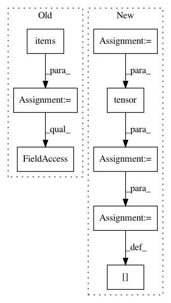

1f720ee453871b2ab764f608926281716ef7bf81,tools/train_pl.py,LitModel,training_step,#LitModel#Any#Any#,88
Before Change
logger_logs["scheduled_sampling_prob"] = self.model.ss_prob
logger_logs["training_loss"] = loss
output = {k:v if k == "loss" else v.data for k,v in model_out.items()}
output["log"] = logger_logs
return output
After Change
data["gts"], torch.arange(0, len(data["gts"])), sc_flag, struc_flag)
loss = model_out["loss"]
data_time = self.trainer.profiler.recorded_durations["get_train_batch"][-1]
data_time = torch.tensor(data_time)
logger_logs = model_out.copy()
if struc_flag or sc_flag:
logger_logs["reward"] = model_out["reward"].mean()
logger_logs["reward_var"] = model_out["reward"].var(1).mean()
logger_logs["scheduled_sampling_prob"] = torch.tensor(
self.model.ss_prob)
logger_logs["training_loss"] = loss
logger_logs["data_time"] = data_time
output = {
"loss": loss,
"log": logger_logs,
In pattern: SUPERPATTERN
Frequency: 3
Non-data size: 8
Instances
Project Name: ruotianluo/ImageCaptioning.pytorch
Commit Name: 1f720ee453871b2ab764f608926281716ef7bf81
Time: 2020-07-05
Author: rluo@ttic.edu
File Name: tools/train_pl.py
Class Name: LitModel
Method Name: training_step
Project Name: OpenMined/PySyft
Commit Name: 59d4bbaaf06850e2dfb357855f50b05f6c9aadb1
Time: 2020-10-02
Author: skywind29@users.noreply.github.com
File Name: syft/frameworks/torch/fl/utils.py
Class Name:
Method Name: scale_model